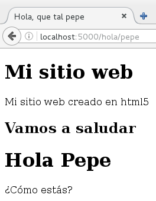
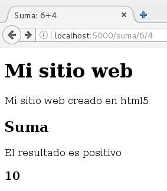
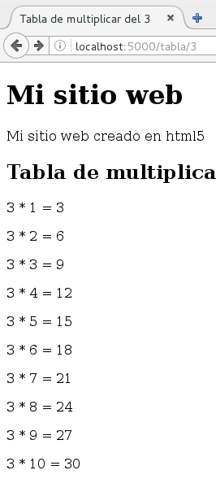
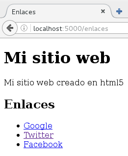

Generando páginas HTML con Flask y Jinja2¶
Flask utiliza por defecto jinja2 para generar documentos HTML, para generar una plantilla utilizamos la función render_template que recibe como parámetro el fichero donde guardamos la plantilla y las variables que se pasan a esta.
Las plantillas las vamos a guardar en ficheros en el directorio templates (dentro del directorio aplicacion). Así que primero crearemos el directorio template.
Plantilla simple¶
Veamos un ejemplo de cómo podemos generar HTML a partir de una plantilla en Flask, el programa será el siguiente:
...
@app.route('/hola/')
@app.route('/hola/<nombre>')
def saluda(nombre=None):
return render_template("template1.html",nombre=nombre)
template1.html¶
<!DOCTYPE html>
<html lang="es">
<head>
<title>Hola, que tal {{nombre}}</title>
<meta charset="utf-8" />
</head>
<body>
<header>
<h1>Mi sitio web</h1>
<p>Mi sitio web creado en html5</p>
</header>
<h2>Vamos a saludar</h2>
{% if nombre %}
<h1>Hola {{nombre|title}}</h1>
<p>¿Cómo estás?</p>
{%else%}
<p>No has indicado un nombre</p>
{% endif %}
</body>
</html>

Envío de varias variables a una plantilla¶
En este caso veremos un ejemplo donde mandamos varias variables a la plantilla:
@app.route('/suma/<num1>/<num2>')
def suma(num1,num2):
try:
resultado=int(num1)+int(num2)
except:
abort(404)
return render_template("template2.html",num1=num1,num2=num2,resultado=resultado)
template2.html¶
...
<h2>Suma</h2>
{% if resultado>0 %}
<p>El resultado es positivo</p>
{%else%}
<p>El resultado es negativo</p>
{% endif %}
<h3>{{resultado}}</h3>
...

Generando páginas de error con plantillas¶
Como vemos en el ejemplo anterior, si los números no se pueden sumar se generara una respuesta 404, podemos también generar esta página a partir de una plantilla:
@app.errorhandler(404)
def page_not_found(error):
return render_template("error.html",error="Página no encontrada..."), 404
error.html¶
...
<header>
<h1>{{error}}</h1>
<img src="{{ url_for('static', filename='img/tux.png')}}"/>
</header>
...
Uso de for en una plantilla¶
En este caso vamos a mostrar la tabla de multiplicar de un número, en la plantilla vamos a generar un bucle con 10 iteraciones usando el tipo de datos range:
@app.route('/tabla/<numero>')
def tabla(numero):
try:
numero=int(numero)
except:
abort(404)
return render_template("template3.html",num=numero)
template3.html¶
...
<h2>Tabla de multiplicar</h2>
{% for i in range(1,11) -%}
<p>{{num}} * {{i}} = {{num*i}}</p>
{% endfor -%}
...

Envío de diccionario a una plantilla¶
En realidad vamos a mandar una lista de diccionarios, donde tenemos información para construir un enlace:
@app.route('/enlaces')
def enlaces():
enlaces=[{"url":"http://www.google.es","texto":"Google"},
{"url":"http://www.twitter.com","texto":"Twitter"},
{"url":"http://www.facbook.com","texto":"Facebook"},
]
return render_template("template4.html",enlaces=enlaces)
template4.html.¶
...
<h2>Enlaces</h2>
{% if enlaces %}
<ul>
{% for enlace in enlaces -%}
<li><a href="{{ enlace.url }}">{{ enlace.texto }}</a></li>
{% endfor -%}
</ul>
{% else %}
<p>No hay enlaces></p>
{% endif %}
...

Código ejemplo de esta unidad Código